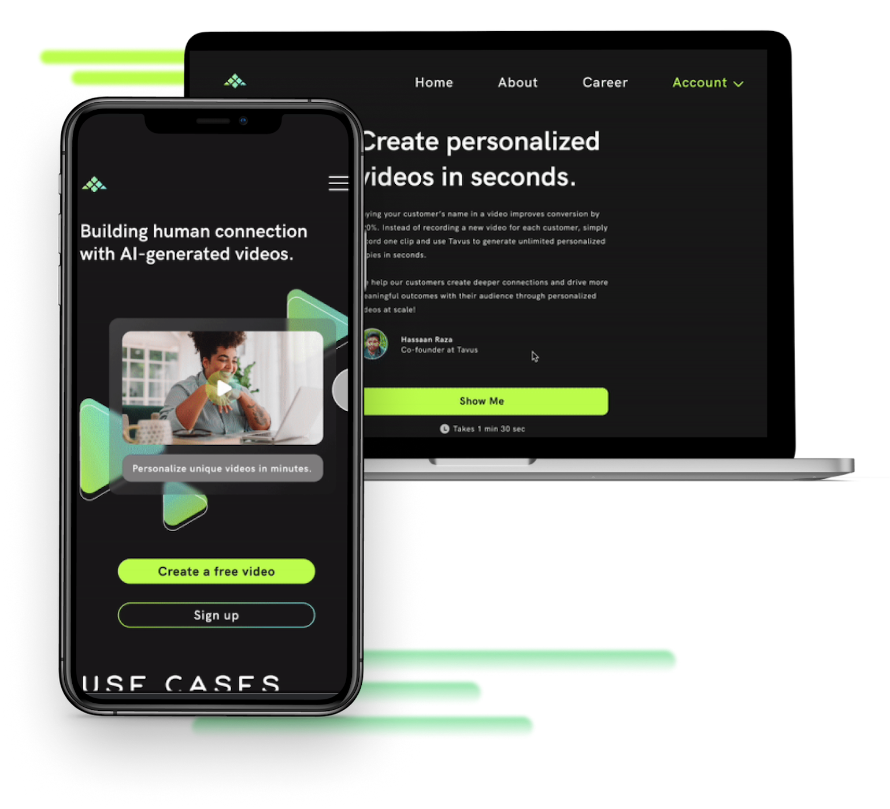
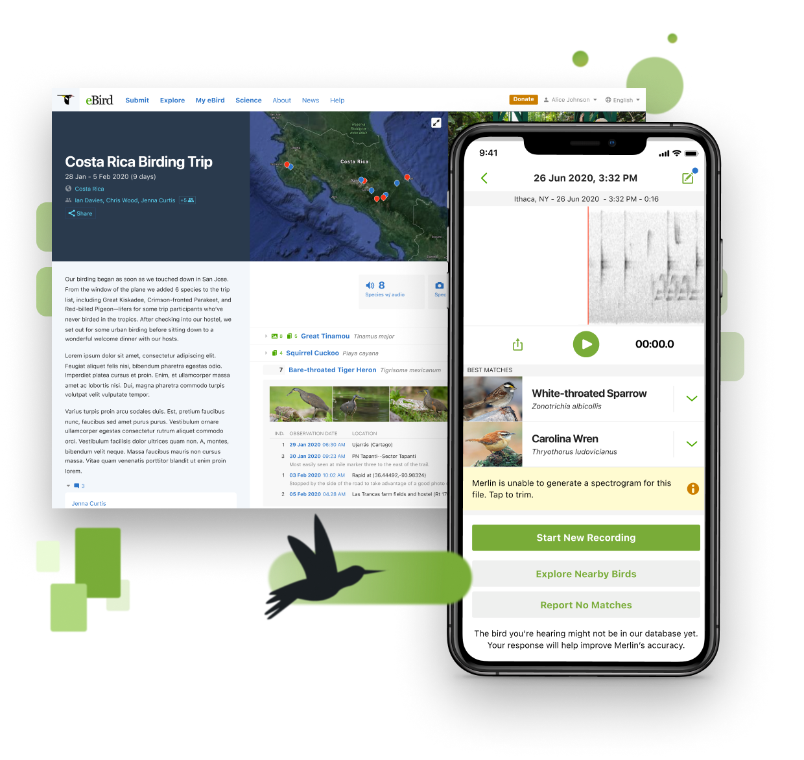
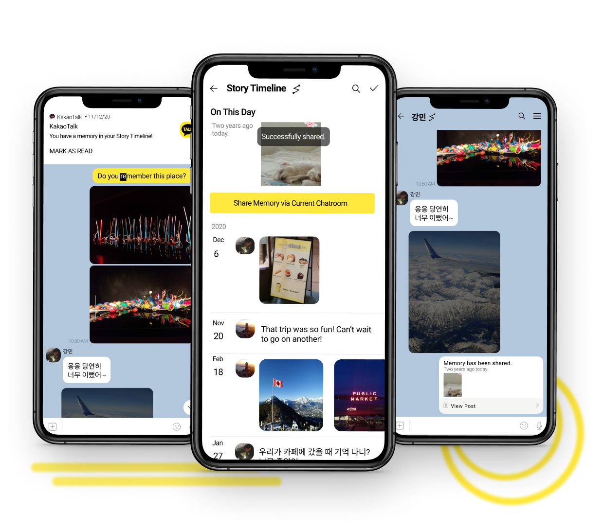

An artist turned designer with a focus on digital
product design and branding at Cornell University.
product design and branding at Cornell University.
Selected

TAVUS
Rebranding Tavus to better reflect their values in a metaverse theme and emphasizing their values.

ENHANCING USER EXPERIENCE
Refreshing deprecated iconography to produce an intuitive user experience to improve consistency.

CONVERSATIONS THAT BEGIN
A feature that recalls past memories and encourages people to reconnect and develop deeper
relationships.

SPARKING DIALOGUE
Developing brand identity for Cornell sponsored podcast designed to initiate community dialogue.
Thanks for stopping by!